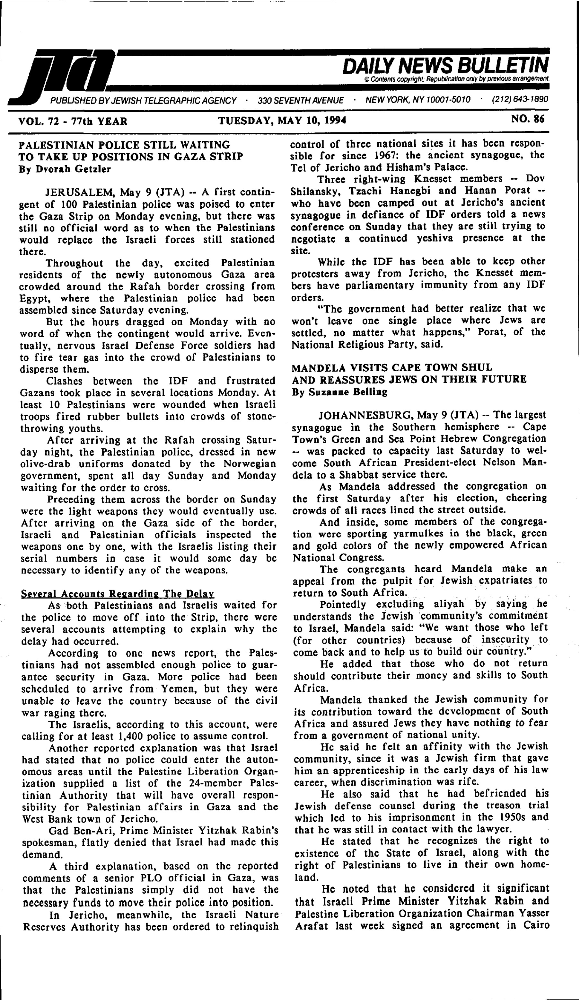
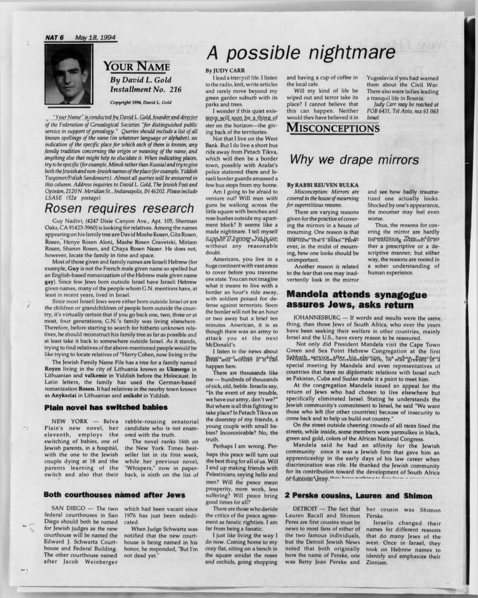

HN-809 · May 18, 1994 · Civil Rights & Social Change > Racial, Ethnic & Religious Justice > Equality campaigns
Source: Jewish Post, p. 12 — original page.
Report: The article described newly inaugurated President Mandela attending a Cape Town synagogue service, engaging Jewish community concerns, and encouraging emigrants to consider returning to South Africa.
Assessment: Reported outreach and political reassurance, not proof that emigration reversed or every concern disappeared. Statements at one visit are separate from later demographic trends and government practice.
Identity-review candidate peers: HN-812:Algorithmic; HN-795:Algorithmic; HN-804:Algorithmic
Authentic images retrieved from Jewish Telegraphic Agency Archive and Hoosier State Chronicles (Indiana State Library). Article crops are located using the archive's own OCR word coordinates and rendered at native crop resolution; article clips are assembled from the archive's own article-block images; page images marked "archive tiles" are stitched from the archive's own tiled page service at its 256-px tile cap; page images marked "issue PDF" are single pages rasterised from the archive's own issue PDF, with the page chosen by matching the headline against the PDF's text layer; page scans are reduced-size access renditions. No images were generated, mocked, or retouched.


Status: Archive images acquired
Authentic archive-owned image renditions were retrieved for this record and are displayed above. The source-acquisition manifest preserves the original pre-acquisition feasibility assessment.
URL (preserved verbatim): https://newspapers.library.in.gov/?a=d&d=JPOST19940518-01.1.12
Saved research report: Historical_Newspaper_Event_Research_803-827_2026-10-23.md
Evidence note: A newspaper report means a historical publication made a claim; it does not establish that claim as fact. Contemporary reporting is separated from later scholarly context and our own assessment.